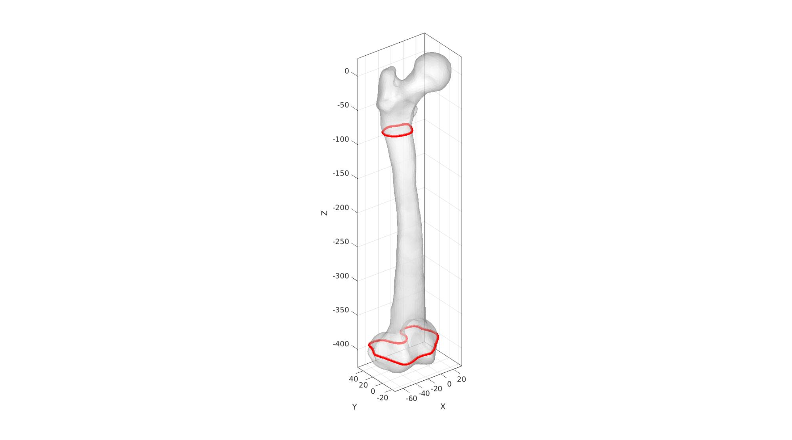
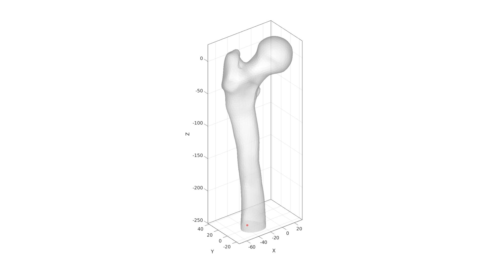
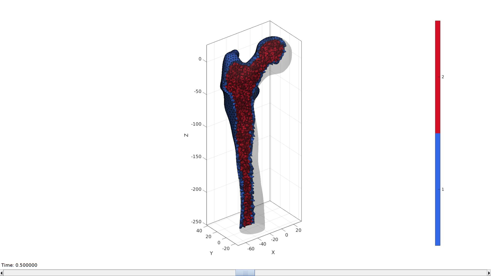

DEMO_febio_0062_femur_load_01
Below is a demonstration for:
- Building geometry femur bone
- Applying a load to the femur head
Contents
- Keywords
- Plot settings
- Control parameters
- Import bone surface model
- Scale and reorient
- Visualize bone surface
- Cut bone surface
- Visualize bone surface
- Mesh using tetgen
- Visualize interior point
- Define material regions in bone
- Visualizing solid mesh
- Find femoral head
- Work out force distribution on femoral head surface nodes
- Visualizing boundary conditions
- Defining the FEBio input structure
- Quick viewing of the FEBio input file structure
- Exporting the FEBio input file
- Running the FEBio analysis
- Import FEBio results
Keywords
- febio_spec version 2.5
- febio, FEBio
- beam force loading
- force control boundary condition
- tetrahedral elements, tet4
- femur
- static, solid
- displacement logfile
- stress logfile
clear; close all; clc;
Plot settings
fontSize=20; faceAlpha1=0.8; markerSize=40; markerSize2=20; lineWidth=3;
Control parameters
% Path names defaultFolder = fileparts(fileparts(mfilename('fullpath'))); savePath=fullfile(defaultFolder,'data','temp'); pathNameSTL=fullfile(defaultFolder,'data','STL'); % Defining file names febioFebFileNamePart='tempModel'; febioFebFileName=fullfile(savePath,[febioFebFileNamePart,'.feb']); %FEB file name febioLogFileName=fullfile(savePath,[febioFebFileNamePart,'.txt']); %FEBio log file name febioLogFileName_disp=[febioFebFileNamePart,'_disp_out.txt']; %Log file name for exporting displacement febioLogFileName_force=[febioFebFileNamePart,'_force_out.txt']; %Log file name for exporting force febioLogFileName_stress=[febioFebFileNamePart,'_stress_out.txt']; %Log file name for exporting stresses febioLogFileName_strainEnergy=[febioFebFileNamePart,'_energy_out.txt']; %Log file name for exporting strain energy density %Geometric parameters distanceCut=250; %Distance from femur to cut bone at corticalThickness=3; %Thickness used for cortical material definition volumeFactor=2; %Factor to scale desired volume for interior elements w.r.t. boundary elements %Define applied force forceBody=[-405 246 -1717.5]; %x,y,z force in Newton %Material parameters (MPa if spatial units are mm) % Cortical bone E_youngs1=17000; %Youngs modulus nu1=0.25; %Poissons ratio % Cancellous bone E_youngs2=1500; %Youngs modulus nu2=0.25; %Poissons ratio % FEA control settings numTimeSteps=10; %Number of time steps desired max_refs=25; %Max reforms max_ups=0; %Set to zero to use full-Newton iterations opt_iter=6; %Optimum number of iterations max_retries=5; %Maximum number of retires dtmin=(1/numTimeSteps)/100; %Minimum time step size dtmax=1/numTimeSteps; %Maximum time step size runMode='external'; %'external' or 'internal'
Import bone surface model
[stlStruct] = import_STL(fullfile(pathNameSTL,'femur_iso.stl')); F_bone=stlStruct.solidFaces{1}; %Faces V_bone=stlStruct.solidVertices{1}; %Vertices
Scale and reorient
V_bone=V_bone.*1000; %Scale to mm [F_bone,V_bone]=mergeVertices(F_bone,V_bone); % Merging nodes Q1=euler2DCM([0 0 0.065*pi]); V_bone=V_bone*Q1; Q2=euler2DCM([-0.5*pi 0 0]); V_bone=V_bone*Q2; Q3=euler2DCM([0 0 0.36*pi]); V_bone=V_bone*Q3;
Visualize bone surface
cFigure; hold on; gpatch(F_bone,V_bone,'w','k',1); % patchNormPlot(F_bone,V_bone) axisGeom; camlight headlight; drawnow;
Cut bone surface
%Slicing surface [F_bone,V_bone,~,logicSide,~]=triSurfSlice(F_bone,V_bone,[],[0 0 -distanceCut],[0 0 1]); F_bone=F_bone(logicSide==0,:); [F_bone,V_bone]=patchCleanUnused(F_bone,V_bone); Eb=patchBoundary(F_bone,V_bone); indCurve=edgeListToCurve(Eb); indCurve=indCurve(1:end-1); cparSmooth.n=5; cparSmooth.Method='HC'; [V_Eb_smooth]=patchSmooth(Eb,V_bone(:,[1 2]),[],cparSmooth); V_bone(indCurve,[1 2])=V_Eb_smooth(indCurve,:); cparSmooth.n=5; cparSmooth.Method='HC'; cparSmooth.RigidConstraints=indCurve; [V_bone]=patchSmooth(F_bone,V_bone,[],cparSmooth); pointSpacing=mean(patchEdgeLengths(F_bone,V_bone)); [F_bone2,V_bone2]=regionTriMesh3D({V_bone(indCurve,:)},pointSpacing,0,'linear'); if dot(mean(patchNormal(F_bone2,V_bone2)),[0 0 1])>0 F_bone2=fliplr(F_bone2); end [F_bone,V_bone,C_bone]=joinElementSets({F_bone,F_bone2},{V_bone,V_bone2}); [F_bone,V_bone]=mergeVertices(F_bone,V_bone);
Visualize bone surface
cFigure; hold on; gpatch(F_bone,V_bone,C_bone,'k',1); patchNormPlot(F_bone,V_bone); axisGeom; camlight headlight; drawnow;
Mesh using tetgen
%Find interior point
V_inner_bone=getInnerPoint(F_bone,V_bone);
Visualize interior point
cFigure; hold on; gpatch(F_bone,V_bone,'w','none',0.5); plotV(V_inner_bone,'r.','MarkerSize',25) axisGeom; camlight headlight; drawnow;

Regional mesh volume parameter
tetVolume=tetVolMeanEst(F_bone,V_bone); %Volume for regular tets tetGenStruct.stringOpt='-pq1.2AaY'; tetGenStruct.Faces=F_bone; tetGenStruct.Nodes=V_bone; tetGenStruct.holePoints=[]; tetGenStruct.faceBoundaryMarker=C_bone; %Face boundary markers tetGenStruct.regionPoints=V_inner_bone; %region points tetGenStruct.regionA=tetVolume*volumeFactor; [meshOutput]=runTetGen(tetGenStruct); %Run tetGen % Access elements, nodes, and boundary faces E=meshOutput.elements; V=meshOutput.nodes; Fb=meshOutput.facesBoundary; Cb=meshOutput.boundaryMarker; CE=meshOutput.elementMaterialID;
%%%%%%%%%%%%%%%%%%%%%%%%%%%%%%%%%%%%%%%%%%%%% --- TETGEN Tetrahedral meshing --- 07-Jul-2020 10:15:32 %%%%%%%%%%%%%%%%%%%%%%%%%%%%%%%%%%%%%%%%%%%%% --- Writing SMESH file --- 07-Jul-2020 10:15:32 ----> Adding node field ----> Adding facet field ----> Adding holes specification ----> Adding region specification --- Done --- 07-Jul-2020 10:15:32 --- Running TetGen to mesh input boundary--- 07-Jul-2020 10:15:32 Opening /mnt/data/MATLAB/GIBBON/data/temp/temp.smesh. Delaunizing vertices... Delaunay seconds: 0.019044 Creating surface mesh ... Surface mesh seconds: 0.004628 Recovering boundaries... Boundary recovery seconds: 0.008168 Removing exterior tetrahedra ... Spreading region attributes. Exterior tets removal seconds: 0.004571 Recovering Delaunayness... Delaunay recovery seconds: 0.004197 Refining mesh... Refinement seconds: 0.111504 Optimizing mesh... Optimization seconds: 0.00758 Writing /mnt/data/MATLAB/GIBBON/data/temp/temp.1.node. Writing /mnt/data/MATLAB/GIBBON/data/temp/temp.1.ele. Writing /mnt/data/MATLAB/GIBBON/data/temp/temp.1.face. Writing /mnt/data/MATLAB/GIBBON/data/temp/temp.1.edge. Output seconds: 0.101369 Total running seconds: 0.26133 Statistics: Input points: 2957 Input facets: 5910 Input segments: 8865 Input holes: 0 Input regions: 1 Mesh points: 8145 Mesh tetrahedra: 41862 Mesh faces: 86679 Mesh faces on exterior boundary: 5910 Mesh faces on input facets: 5910 Mesh edges on input segments: 8865 Steiner points inside domain: 5188 --- Done --- 07-Jul-2020 10:15:32 %%%%%%%%%%%%%%%%%%%%%%%%%%%%%%%%%%%%%%%%%%%%% --- Importing TetGen files --- 07-Jul-2020 10:15:32 --- Done --- 07-Jul-2020 10:15:32
Define material regions in bone
indBoundary=unique(Fb(Cb==1,:)); DE=minDist(V,V(indBoundary,:)); logicMaterialType=DE<=corticalThickness; elementMaterialID=double(any(logicMaterialType(E),2))+1; E1=E(elementMaterialID==1,:); E2=E(elementMaterialID==2,:); E=[E1;E2]; meshOutput.elements=E; meshOutput.elementMaterialID=[ones(size(E1,1),1);2*ones(size(E2,1),1)];
Visualizing solid mesh
hFig=cFigure; hold on; gpatch(Fb,V,Cb,'none',0.5); optionStruct.hFig=hFig; meshView(meshOutput,optionStruct); axisGeom; drawnow;
Find femoral head
w=100; f=[1 2 3 4]; v=w*[-1 -1 0; -1 1 0; 1 1 0; 1 -1 0]; p=[0 0 0]; Q=euler2DCM([0 (150/180)*pi 0]); v=v*Q; v=v+p; Vr=V*Q'; Vr=Vr+p; logicHeadNodes=Vr(:,3)<0; logicHeadFaces=all(logicHeadNodes(Fb),2); indicesHeadSurfaceNodes=unique(Fb(logicHeadFaces,:)); cFigure; hold on; gpatch(Fb,V,'w','k',1); gpatch(f,v,'r','k',0.5); plotV(V(indicesHeadSurfaceNodes,:),'r.','markerSize',15) axisGeom; camlight headlight; drawnow;
Work out force distribution on femoral head surface nodes
This is based on surface normal directions. Forces are assumed to only be able to act in a compressive sense on the bone.
[~,~,N]=patchNormal(fliplr(Fb),V); %Nodal normal directions FX=[forceBody(1) 0 0]; %X force vector FY=[0 forceBody(2) 0]; %Y force vector FZ=[0 0 forceBody(3)]; %Z force vector dx=dot(N(indicesHeadSurfaceNodes,:),FX(ones(numel(indicesHeadSurfaceNodes),1),:),2); dy=dot(N(indicesHeadSurfaceNodes,:),FY(ones(numel(indicesHeadSurfaceNodes),1),:),2); dz=dot(N(indicesHeadSurfaceNodes,:),FZ(ones(numel(indicesHeadSurfaceNodes),1),:),2); wx=dx; wx(wx>0)=0; %Force zero wy=dy; wy(wy>0)=0; %Force zero wz=dz; wz(wz>0)=0; %Force zero force_X=forceBody(1).*ones(numel(indicesHeadSurfaceNodes),1).*wx; force_Y=forceBody(2).*ones(numel(indicesHeadSurfaceNodes),1).*wy; force_Z=forceBody(3).*ones(numel(indicesHeadSurfaceNodes),1).*wz; force_X=force_X./sum(force_X(:)); %sum now equal to 1 force_X=force_X.*forceBody(1); %sum now equal to desired force_Y=force_Y./sum(force_Y(:)); %sum now equal to 1 force_Y=force_Y.*forceBody(2); %sum now equal to desired force_Z=force_Z./sum(force_Z(:)); %sum now equal to 1 force_Z=force_Z.*forceBody(3); %sum now equal to desired
cFigure; subplot(1,3,1);hold on; title('F_x'); gpatch(Fb,V,'w','none',0.5); quiverVec([0 0 0],FX,100,'k'); % scatterV(V(indicesHeadNodes,:),15) quiverVec(V(indicesHeadSurfaceNodes,:),N(indicesHeadSurfaceNodes,:),10,force_X); axisGeom; camlight headlight; colormap(gca,gjet(250)); colorbar; subplot(1,3,2);hold on; title('F_y'); gpatch(Fb,V,'w','none',0.5); quiverVec([0 0 0],FY,100,'k'); % scatterV(V(indicesHeadNodes,:),15) quiverVec(V(indicesHeadSurfaceNodes,:),N(indicesHeadSurfaceNodes,:),10,force_Y); axisGeom; camlight headlight; colormap(gca,gjet(250)); colorbar; subplot(1,3,3);hold on; title('F_z'); gpatch(Fb,V,'w','none',0.5); quiverVec([0 0 0],FZ,100,'k'); % scatterV(V(indicesHeadNodes,:),15) quiverVec(V(indicesHeadSurfaceNodes,:),N(indicesHeadSurfaceNodes,:),10,force_Z); axisGeom; camlight headlight; colormap(gca,gjet(250)); colorbar; drawnow;

Visualizing boundary conditions
F_bottomSupport=Fb(Cb==2,:); bcSupportList=unique(F_bottomSupport(:)); hFig=cFigure; hold on; gpatch(Fb,V,'kw','none',0.25); hl(1)=plotV(V(bcSupportList,:),'k.','MarkerSize',25); hl(2)=plotV(V(indicesHeadSurfaceNodes,:),'r.','MarkerSize',25); legend(hl,{'BC support','BC forceprescribe'}); axisGeom; camlight headlight; drawnow;

Defining the FEBio input structure
See also febioStructTemplate and febioStruct2xml and the FEBio user manual.
%Get a template with default settings [febio_spec]=febioStructTemplate; %febio_spec version febio_spec.ATTR.version='2.5'; %Module section febio_spec.Module.ATTR.type='solid'; %Control section febio_spec.Control.analysis.ATTR.type='static'; febio_spec.Control.time_steps=numTimeSteps; febio_spec.Control.step_size=1/numTimeSteps; febio_spec.Control.time_stepper.dtmin=dtmin; febio_spec.Control.time_stepper.dtmax=dtmax; febio_spec.Control.time_stepper.max_retries=max_retries; febio_spec.Control.time_stepper.opt_iter=opt_iter; febio_spec.Control.max_refs=max_refs; febio_spec.Control.max_ups=max_ups; %Material section febio_spec.Material.material{1}.ATTR.type='neo-Hookean'; febio_spec.Material.material{1}.ATTR.id=1; febio_spec.Material.material{1}.E=E_youngs1; febio_spec.Material.material{1}.v=nu1; febio_spec.Material.material{2}.ATTR.type='neo-Hookean'; febio_spec.Material.material{2}.ATTR.id=2; febio_spec.Material.material{2}.E=E_youngs2; febio_spec.Material.material{2}.v=nu2; %Geometry section % -> Nodes febio_spec.Geometry.Nodes{1}.ATTR.name='nodeSet_all'; %The node set name febio_spec.Geometry.Nodes{1}.node.ATTR.id=(1:size(V,1))'; %The node id's febio_spec.Geometry.Nodes{1}.node.VAL=V; %The nodel coordinates % -> Elements febio_spec.Geometry.Elements{1}.ATTR.type='tet4'; %Element type of this set febio_spec.Geometry.Elements{1}.ATTR.mat=1; %material index for this set febio_spec.Geometry.Elements{1}.ATTR.name='CorticalBone'; %Name of the element set febio_spec.Geometry.Elements{1}.elem.ATTR.id=(1:1:size(E1,1))'; %Element id's febio_spec.Geometry.Elements{1}.elem.VAL=E1; febio_spec.Geometry.Elements{2}.ATTR.type='tet4'; %Element type of this set febio_spec.Geometry.Elements{2}.ATTR.mat=2; %material index for this set febio_spec.Geometry.Elements{2}.ATTR.name='CancellousBone'; %Name of the element set febio_spec.Geometry.Elements{2}.elem.ATTR.id=size(E1,1)+(1:1:size(E2,1))'; %Element id's febio_spec.Geometry.Elements{2}.elem.VAL=E2; % -> NodeSets febio_spec.Geometry.NodeSet{1}.ATTR.name='bcSupportList'; febio_spec.Geometry.NodeSet{1}.node.ATTR.id=bcSupportList(:); febio_spec.Geometry.NodeSet{2}.ATTR.name='indicesHeadSurfaceNodes'; febio_spec.Geometry.NodeSet{2}.node.ATTR.id=indicesHeadSurfaceNodes(:); %Boundary condition section % -> Fix boundary conditions febio_spec.Boundary.fix{1}.ATTR.bc='x'; febio_spec.Boundary.fix{1}.ATTR.node_set=febio_spec.Geometry.NodeSet{1}.ATTR.name; febio_spec.Boundary.fix{2}.ATTR.bc='y'; febio_spec.Boundary.fix{2}.ATTR.node_set=febio_spec.Geometry.NodeSet{1}.ATTR.name; febio_spec.Boundary.fix{3}.ATTR.bc='z'; febio_spec.Boundary.fix{3}.ATTR.node_set=febio_spec.Geometry.NodeSet{1}.ATTR.name; febio_spec.MeshData.NodeData{1}.ATTR.name='force_X'; febio_spec.MeshData.NodeData{1}.ATTR.node_set=febio_spec.Geometry.NodeSet{2}.ATTR.name; febio_spec.MeshData.NodeData{1}.node.VAL=force_X; febio_spec.MeshData.NodeData{1}.node.ATTR.lid=(1:1:numel(indicesHeadSurfaceNodes))'; febio_spec.MeshData.NodeData{2}.ATTR.name='force_Y'; febio_spec.MeshData.NodeData{2}.ATTR.node_set=febio_spec.Geometry.NodeSet{2}.ATTR.name; febio_spec.MeshData.NodeData{2}.node.VAL=force_Y; febio_spec.MeshData.NodeData{2}.node.ATTR.lid=(1:1:numel(indicesHeadSurfaceNodes))'; febio_spec.MeshData.NodeData{3}.ATTR.name='force_Z'; febio_spec.MeshData.NodeData{3}.ATTR.node_set=febio_spec.Geometry.NodeSet{2}.ATTR.name; febio_spec.MeshData.NodeData{3}.node.VAL=force_Z; febio_spec.MeshData.NodeData{3}.node.ATTR.lid=(1:1:numel(indicesHeadSurfaceNodes))'; %Loads section % -> Prescribed nodal forces febio_spec.Loads.nodal_load{1}.ATTR.bc='x'; febio_spec.Loads.nodal_load{1}.ATTR.node_set=febio_spec.Geometry.NodeSet{2}.ATTR.name; febio_spec.Loads.nodal_load{1}.scale.ATTR.lc=1; febio_spec.Loads.nodal_load{1}.scale.VAL=1; febio_spec.Loads.nodal_load{1}.value.ATTR.node_data=febio_spec.MeshData.NodeData{1}.ATTR.name; febio_spec.Loads.nodal_load{2}.ATTR.bc='y'; febio_spec.Loads.nodal_load{2}.ATTR.node_set=febio_spec.Geometry.NodeSet{2}.ATTR.name; febio_spec.Loads.nodal_load{2}.scale.ATTR.lc=1; febio_spec.Loads.nodal_load{2}.scale.VAL=1; febio_spec.Loads.nodal_load{2}.value.ATTR.node_data=febio_spec.MeshData.NodeData{2}.ATTR.name; febio_spec.Loads.nodal_load{3}.ATTR.bc='z'; febio_spec.Loads.nodal_load{3}.ATTR.node_set=febio_spec.Geometry.NodeSet{2}.ATTR.name; febio_spec.Loads.nodal_load{3}.scale.ATTR.lc=1; febio_spec.Loads.nodal_load{3}.scale.VAL=1; febio_spec.Loads.nodal_load{3}.value.ATTR.node_data=febio_spec.MeshData.NodeData{3}.ATTR.name; %Output section % -> log file febio_spec.Output.logfile.ATTR.file=febioLogFileName; febio_spec.Output.logfile.node_data{1}.ATTR.file=febioLogFileName_disp; febio_spec.Output.logfile.node_data{1}.ATTR.data='ux;uy;uz'; febio_spec.Output.logfile.node_data{1}.ATTR.delim=','; febio_spec.Output.logfile.node_data{1}.VAL=1:size(V,1); febio_spec.Output.logfile.element_data{1}.ATTR.file=febioLogFileName_stress; febio_spec.Output.logfile.element_data{1}.ATTR.data='s1;s2;s3'; febio_spec.Output.logfile.element_data{1}.ATTR.delim=','; febio_spec.Output.logfile.element_data{1}.VAL=1:1:size(E,1); %Rigid body material id febio_spec.Output.logfile.element_data{2}.ATTR.file=febioLogFileName_strainEnergy; febio_spec.Output.logfile.element_data{2}.ATTR.data='sed'; febio_spec.Output.logfile.element_data{2}.ATTR.delim=','; febio_spec.Output.logfile.element_data{2}.VAL=1:1:size(E,1);
Quick viewing of the FEBio input file structure
The febView function can be used to view the xml structure in a MATLAB figure window.
febView(febio_spec); %Viewing the febio file
Exporting the FEBio input file
Exporting the febio_spec structure to an FEBio input file is done using the febioStruct2xml function.
febioStruct2xml(febio_spec,febioFebFileName); %Exporting to file and domNode
Running the FEBio analysis
To run the analysis defined by the created FEBio input file the runMonitorFEBio function is used. The input for this function is a structure defining job settings e.g. the FEBio input file name. The optional output runFlag informs the user if the analysis was run succesfully.
febioAnalysis.run_filename=febioFebFileName; %The input file name febioAnalysis.run_logname=febioLogFileName; %The name for the log file febioAnalysis.disp_on=1; %Display information on the command window febioAnalysis.disp_log_on=1; %Display convergence information in the command window febioAnalysis.runMode=runMode;%'internal'; febioAnalysis.t_check=0.25; %Time for checking log file (dont set too small) febioAnalysis.maxtpi=1e99; %Max analysis time febioAnalysis.maxLogCheckTime=10; %Max log file checking time [runFlag]=runMonitorFEBio(febioAnalysis);%START FEBio NOW!!!!!!!!
%%%%%%%%%%%%%%%%%%%%%%%%%%%%%%%%%%%%%%%%%%%%% --- STARTING FEBIO JOB --- 07-Jul-2020 10:15:38 Waiting for log file... Proceeding to check log file...07-Jul-2020 10:15:38 ------- converged at time : 0.1 ------- converged at time : 0.2 ------- converged at time : 0.3 ------- converged at time : 0.4 ------- converged at time : 0.5 ------- converged at time : 0.6 ------- converged at time : 0.7 ------- converged at time : 0.8 ------- converged at time : 0.9 ------- converged at time : 1 --- Done --- 07-Jul-2020 10:15:52
Import FEBio results
if runFlag==1 %i.e. a succesful run
% Importing nodal displacancellousBones from a log file [time_mat, N_disp_mat,~]=importFEBio_logfile(fullfile(savePath,febioLogFileName_disp)); %Nodal displacancellousBones time_mat=[0; time_mat(:)]; %Time N_disp_mat=N_disp_mat(:,2:end,:); sizImport=size(N_disp_mat); sizImport(3)=sizImport(3)+1; N_disp_mat_n=zeros(sizImport); N_disp_mat_n(:,:,2:end)=N_disp_mat; N_disp_mat=N_disp_mat_n; DN=N_disp_mat(:,:,end); DN_magnitude=sqrt(sum(DN(:,3).^2,2)); V_DEF=N_disp_mat+repmat(V,[1 1 size(N_disp_mat,3)]);
Importing element strain energies from a log file
[~,E_energy,~]=importFEBio_logfile(fullfile(savePath,febioLogFileName_strainEnergy)); %Element strain energy %Remove nodal index column E_energy=E_energy(:,2:end,:); %Add initial state i.e. zero energy sizImport=size(E_energy); sizImport(3)=sizImport(3)+1; E_energy_mat_n=zeros(sizImport); E_energy_mat_n(:,:,2:end)=E_energy; E_energy=E_energy_mat_n;
[FE_face,C_energy_face]=element2patch(E,E_energy(:,:,end),'tet4');
[CV]=faceToVertexMeasure(FE_face,V,C_energy_face);
[indBoundary]=tesBoundary(FE_face,V);
Fb=FE_face(indBoundary,:);
Plotting the simulated results using anim8 to visualize and animate deformations
axLim=[min(min(V_DEF,[],3),[],1); max(max(V_DEF,[],3),[],1)];
% Create basic view and store graphics handle to initiate animation
hf=cFigure; %Open figure
title('Strain energy density')
gtitle([febioFebFileNamePart,': Press play to animate']);
hp1=gpatch(Fb,V_DEF(:,:,end),CV,'k',1); %Add graphics object to animate
hp1.FaceColor='Interp';
axisGeom(gca,fontSize);
colormap(gjet(250)); colorbar;
caxis([0 max(E_energy(:))/25]);
axis(axLim(:)'); %Set axis limits statically
camlight headlight;
% Set up animation features
animStruct.Time=time_mat; %The time vector
for qt=1:1:size(N_disp_mat,3) %Loop over time increments
DN=N_disp_mat(:,:,qt); %Current displacancellousBone
[FE_face,C_energy_face]=element2patch(E,E_energy(:,:,qt),'tet4');
[CV]=faceToVertexMeasure(FE_face,V,C_energy_face);
%Set entries in animation structure
animStruct.Handles{qt}=[hp1 hp1]; %Handles of objects to animate
animStruct.Props{qt}={'Vertices','CData'}; %Properties of objects to animate
animStruct.Set{qt}={V_DEF(:,:,qt),CV}; %Property values for to set in order to animate
end
anim8(hf,animStruct); %Initiate animation feature
drawnow;

end
GIBBON footer text
License: https://github.com/gibbonCode/GIBBON/blob/master/LICENSE
GIBBON: The Geometry and Image-based Bioengineering add-On. A toolbox for image segmentation, image-based modeling, meshing, and finite element analysis.
Copyright (C) 2006-2020 Kevin Mattheus Moerman
This program is free software: you can redistribute it and/or modify it under the terms of the GNU General Public License as published by the Free Software Foundation, either version 3 of the License, or (at your option) any later version.
This program is distributed in the hope that it will be useful, but WITHOUT ANY WARRANTY; without even the implied warranty of MERCHANTABILITY or FITNESS FOR A PARTICULAR PURPOSE. See the GNU General Public License for more details.
You should have received a copy of the GNU General Public License along with this program. If not, see http://www.gnu.org/licenses/.